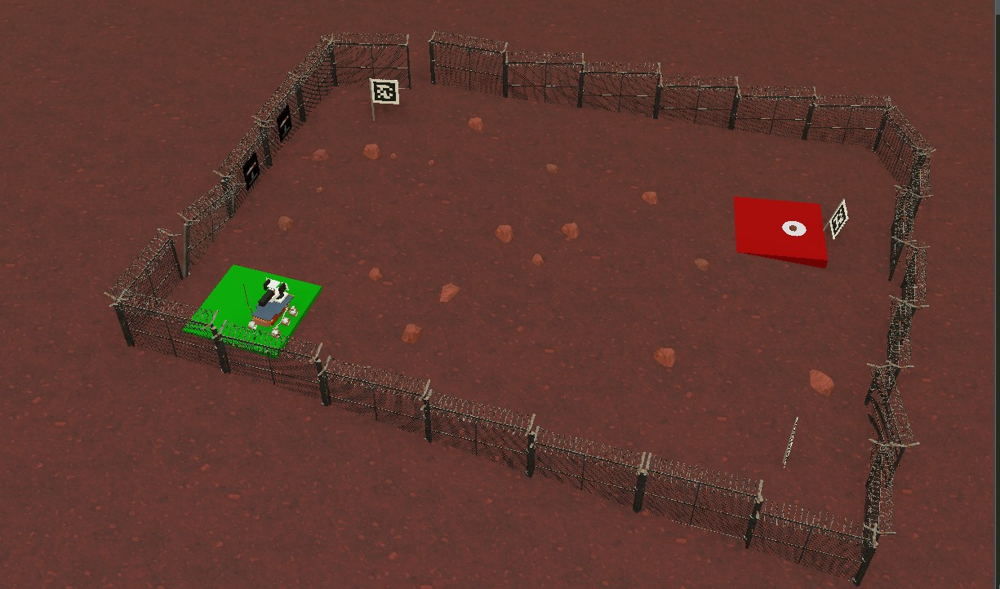

Organized by the Faculty of Engineering, University of Ruhuna | Webots Simulation Environment
Introduction
The "Black Pearl" is a fully autonomous rover system designed to navigate hazardous terrain, identify targets, and safely retrieve payloads. Developed for the cosMotron 2025 virtual autonomous rover challenge, this project successfully secured the championship by demonstrating advanced computer vision, inverse kinematics, and robust mechanical design.

Project Video Demonstration
Watch the Black Pearl navigate the terrain and execute its autonomous retrieval protocol:
Design Philosophy: Stability through Autonomy
Modular Intelligence: Separated logic for Terrain Analysis vs Limb Manipulation.
Visual Feedback Loop: Utilizing an 'Eye-in-Hand' architecture for precision.
Task-Specific Mechanics: Hardware features physically adapt to the current mission phase (Navigation vs Retrieval).
Special Mechanical Features
Autonomous Robotic Arm: Equipped with a wrist-mounted camera for real-time visual servoing and 4-DOF movement for precise grabbing.
Dynamic Stabilizer Legs: Auto-deploy before the arm sequence begins to prevent chassis tip-over during heavy lifting.
Secure Payload Compartment: Retractable cover design remains sealed during transport and reveals only upon reaching the destination.
Coding Focus - Terrain and Obstacle Logic
Distinguishing rocks from the ground required texture and area-based decision making.
Logic Flow: Split vision into Left and Right sectors, then calculate 'Rock Contour Area' in both sectors.
Heuristics: If Left_Area < Right_Area → Turn Left.
Blind Drive Mode: Temporarily ignores visual noise after a decision is made to clear the obstacle.
Autonomous Arm Phases
Phase 1 - Initialization and Stabilization: Stop wheels, deploy stabilizer legs, and reset motors to safe constraint limits.
Phase 2 - Visual Search and Optimization: Scans for 'White Surface' (Search Zone) and micro-adjusts joints (M1,M2,M3) to maximize the 'Black Target' pixel count in the frame.
Phase 3 - Retrieval and Storage: Uses time-based gripper actuation and inverse kinematics to lift, rotate base 180°, and deposit into the revealed compartment.